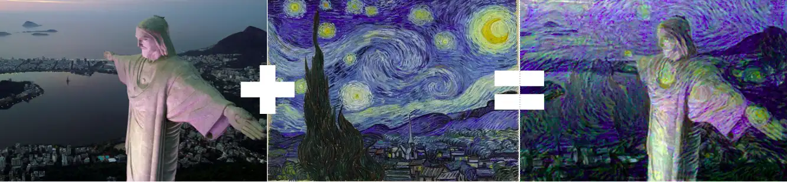
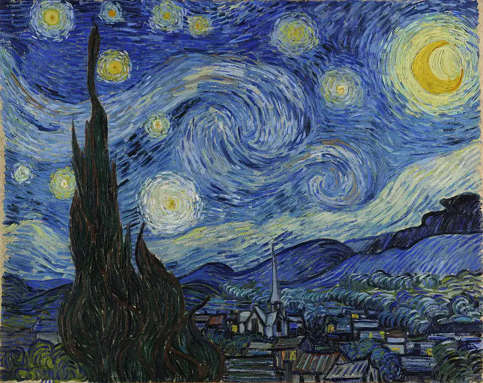
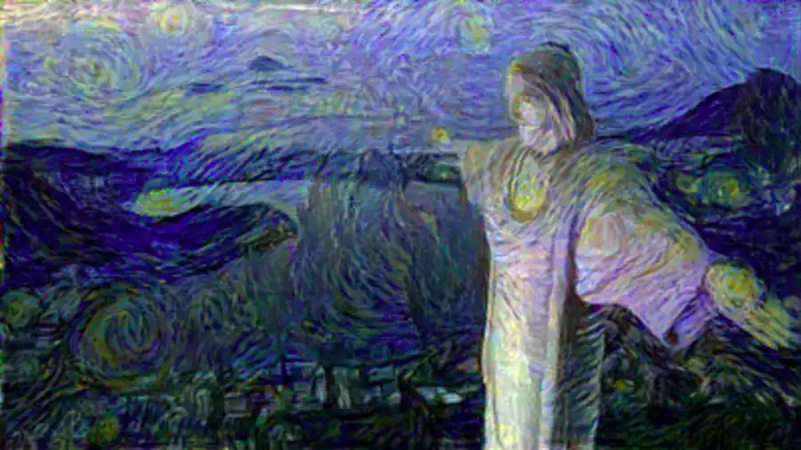

library(torch)
library(torchvision)
library(zeallot)
device <- torch_device(if(cuda_is_available()) "cuda" else "cpu")
cpu <- torch_device("cpu")Neural Style Transfer with Torch
analysis
concepts
tutorials
deep learning
torch
neural style transfer
modeling
Neural Style Transfer is one of the most fun techniques in deep learning. This post shows how to implement an NST network with torch.
Neural Style Transfer is one of the most fun and “artistic” techniques in deep learning. The image below sums up what we are going to do.

You give the neural network two images, style and content, and the result is the content image in the style of style. It’s like an Instagram filter, but with the style of your favorite artist =P.
This post adapts to R + torch an exercise from the deeplearning.ai ‘Convolutional Neural Networks’ course that I took, originally in Python + tensorflow. When I started writing this post, I meant to make it as didactic as possible, but I don’t think I could beat the Coursera course, so I’ll stick to the main points and comment the code for anyone who wants to create their own images! Also, this video (in Portuguese) gives a summary of the NST strategy.
PS: while writing this post I found out that Daniel had already written a little NST example for torchvision. I stole part of the code from there haha.
Key concepts and ideas
The idea is to generate a generated image G whose content is similar to content C and whose style is similar to style S. Content and style are usually extracted from a pre-trained convnet. The original paper (Gatys et al. 2015) uses VGG19, which already comes with {torchvision}.
# VGG19 model
vgg <- model_vgg19(pretrained = TRUE)$features$to(device = device)
# freezing the weights
vgg$parameters %>% purrr::walk(function(param) param$requires_grad_(FALSE))So VGG19 will give us the features, and now we need to define cost functions to find the image with the best trade-off between the content of one image and the style of another. Building the algorithm can be split into three parts:
contentcost function: \(L_{content}(C, G)\)stylecost function: \(L_{style}(S, G)\)- Overall cost function: \(L(G) = \alpha L_{content}(C, G) + \beta L_{style}(S, G)\)
content cost function
On choosing shallow versus deep layers:
- The first layers of a convolutional network tend to extract more basic patterns, such as edges and simple textures.
- Deeper layers usually capture more sophisticated features, such as detailed textures and objects.
As for picking a middle layer: we want the generated image to have content similar to content. The strategy is:
- choose one layer of the network to represent this “content”.
- take that layer for each of the
contentandgeneratedimages. - make the network force these two layers to be as similar as possible.
So the cost function that reflects point (3) can simply be the mean squared error between the pixels of that layer:
content_loss <- function(content_layer, generated_layer) {
nnf_mse_loss(content_layer, generated_layer)
}NOTE: In practice, you’ll get the “coolest” result if you choose layers from the middle: not too shallow, not too deep. Since VGG19 has 37 layers, the chosen one could be, for example, layer 14.
style cost function
The purpose of the style cost function is to minimize the distance between the so-called Gram matrices of the style and generated images.
Gram matrix
In the literature, the style matrix is called the Gram matrix. In mathematics, given a set of vectors, the Gram matrix is the matrix of the inner products of every pair of those vectors. It’s like a correlation matrix, but without centering by the mean. In practice, you take a layer of the network, reshape it into a 2D tensor (a matrix) and compute \(A * A^T\).
gram_matrix <- function(tensor) {
c(b,c,h,w) %<-% tensor$size()
tensor <- tensor$view(c(c, h*w))
torch_matmul(tensor, tensor$t())/(h*w)
}The cost function \(L_{style}(S, G)\) is the good old mean squared error between the Gram matrices.
style_loss <- function(style_layer, generated_layer) {
style_gram <- gram_matrix(style_layer)
generated_gram <- gram_matrix(generated_layer)
nnf_mse_loss(style_gram, generated_gram)
}Style layers
Instead of one, we take five intermediate layers of the network and compute the distances between their Gram matrices. The cost function then becomes a weighted sum of these five distances: \(L_{style}(S, G) = \sum_{l=1}^{5}\lambda^{[l]}L_{style}^{[l]}(S,G)\)
style_layers <- c(2, 7, 12, 21, 29) # choice of VGG layers
lambdas <- 1e5/(c(1,10,10,10,10)^2) # weights for each layer in the final styleNow it’s worth creating an nn_module() that returns the intermediate layers of the network (VGG19, in this case). The layers_out argument lets us choose which layers we want back.
features <- nn_module(
initialize = function(convnet) {
# could be any pre-trained convnet. We'll use VGG19
self$convnet <- convnet
},
forward = function(img, layers_out = NULL) {
layers <- seq_along(self$convnet) # 1 to 37
if(is.null(layers_out)) layers_out <- layers
conv_outs <- purrr::accumulate(layers, ~self$convnet[[.y]](.x), .init = img) # list of 37 tensors
conv_outs[layers_out] # list with only the selected layers
}
)Optimization
Below is the commented code to run the optimization.
# helper functions
to_r <- function(x) as.numeric(x$to(device = cpu))
plot_image <- function(tensor) {
im <- tensor$to(device = "cpu")[1,..]$
permute(c(2, 3, 1))$
to(device = "cpu")$
clamp(0,1) %>% # make it [0,1]
as.array()
par(mar = c(0,0,0,0))
plot(as.raster(im))
}
load_image <- function(path, geometry = "250x200") {
img <- path %>%
magick_loader() %>%
magick::image_resize(geometry) %>%
transform_to_tensor() %>%
torch_unsqueeze(1)
img$to(device = device)
}The parameters and inputs worth experimenting with are:
contentandstyle: the input images, one for content and one for style.content_layer: the VGG19 layer used to extract the content of the content image.style_layers: the VGG19 layers used to extract the style of the style image.lambdas: the weight of each style feature in the optimization.content_weight: the weight of the content features in the optimization.style_weight: the (overall) weight of the style features in the optimization.
Two other parameters that drastically affect the result are the dimensions of the two input images. In the code below, "400x400" and "350x500" can be swapped for other dimensions to get different results.
While creating, you’ll be tweaking these parameters all the time!
# INPUT: content and style images
content <- load_image("content/posts/2021-02-22-neural-style-transfer/cristoredentor3.jpg", "400x400")
style <- load_image("content/posts/2021-02-22-neural-style-transfer/vangogh_starry_night.jpg", "350x500")
# style and content feature setup
content_layer <- 14
style_layers <- c(2, 7, 12, 21, 29)
lambdas <- 1e5/(c(1,10,10,10,10)^2)
content_weight <- 2
style_weight <- 4e-1
# FEATURES: extracted from VGG19
vgg_features <- features(vgg)
content_features <- vgg_features(content, content_layer)
style_features <- vgg_features(style, style_layers)
# OUTPUT: generated image
generated <- torch_clone(content)$requires_grad_(TRUE)
optim <- optim_adam(generated, lr = 0.02)
lr_scheduler <- lr_step(optim, 100, 0.9)
# optimization loop
for(step in seq_len(8000)) {
optim$zero_grad()
# update the features of the image being generated
generated_features <- vgg_features(generated, c(content_layer, style_layers))
# losses
LC <- content_loss(content_features[[1]], generated_features[[1]])
LS <- 0
for(i in seq_along(lambdas))
LS <- LS + lambdas[i]*style_loss(style_features[[i]], generated_features[-1][[i]])
loss <- content_weight * LC + style_weight * LS
loss$backward()
optim$step()
lr_scheduler$step()
# feedback
if(step %% 100 == 0) {
cat(glue::glue("LC = {to_r(LC)} - LS = {to_r(LS)} - Loss = {to_r(loss)}\n\n"))
plot_image(generated)
}
}
# final image
plot_image(generated)LC = 2.70741701126099 - LS = 36.7998428344727 - Loss = 20.1347713470459
LC = 2.61282753944397 - LS = 24.3190288543701 - Loss = 14.9532661437988
LC = 2.54735898971558 - LS = 19.7909469604492 - Loss = 13.0110969543457
LC = 2.49572896957397 - LS = 16.9353790283203 - Loss = 11.7656097412109
LC = 2.44669985771179 - LS = 16.6177845001221 - Loss = 11.5405139923096
So, does it look like a painting? Tell us what you think! Try it with your own images and share them with us =). Learning how NST works is a great exercise for improving your understanding of deep learning models in general, especially how we can design cost functions specialized for a given context.
Learn Deep Learning with Curso-R
If you want to get into the amazing world of deep networks, our Deep Learning course is the best way in. Check it out!
References
Gatys, Leon A., Alexander S. Ecker, and Matthias Bethge. 2015. A Neural Algorithm of Artistic Style. https://arxiv.org/abs/1508.06576.